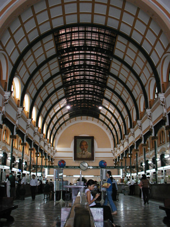

Hi Folks,
=================================
Felt something on my leg the other evening; turned out to be a big roach. Yuck,
I freaked out momentarily! Eventually got it with my shoe. Guess this is not
the time to say "Wish you were here".
=================================
May 12-16, 2003
 Arrived in Ho Chi Minh city, Viet Nam. Another country, another rainy, muddy entry during a downpour. Seems to be a pattern. I had decided to wrap my travel guide and laptop in plastic bags before placing in my day sack. Good thing, as there was lots of water inside the various pockets of the sack.
Arrived in Ho Chi Minh city, Viet Nam. Another country, another rainy, muddy entry during a downpour. Seems to be a pattern. I had decided to wrap my travel guide and laptop in plastic bags before placing in my day sack. Good thing, as there was lots of water inside the various pockets of the sack.
The backpacker community has a sort of feel about the safety of the various countries in this region. Consensus is that the most politically unstable, AND also most dangerous country is Cambodia. Thailand and Viet Nam are amongst the safest. Coupled with the land mine situation, I'm happy to be out of Cambodia and into Viet Nam. That being said, the temple complex at Angkor (Cambodia) will probably be listed as the highlight of my trip.
Met Chris, a backpacker from Munich just as I was about to start a mid-morning walk around Ho Chi Minh City ("Sai Gon" now refers to just one district). He had an older copy of the Lonely Planet, and it shows a suggested walking tour route. We do it together, seeing places like the Opera House, War crimes museum, Notre Dame Cathedral, Historical Museum, and Reunification Palace. Each carries an admission charge, but the Reunification Place includes a guided tour and films. But after we pay our admission at the front gate, the reception committee tells us "self guided tour," with no help,  nor aids. It's an interesting palace, but for me the basement radio rooms bring back memories when I see some of the same gear I worked with while in the Navy - back in 1967.
Many of the museums have a section designated for remembering the "American War", as it is referred to in Viet Nam. Frequent displays of captured American military equipment and armament show how the Viet Cong recycled it. On several occasions, men close to my age come up and mention they were in this or that division or company. I explain I was never in Viet Nam before, and they can hardly believe me. More on this later.
It's late at night, and I still have to pack, get ready for bed, and be up at 5:30 to catch a bus for a tour of the Me Kong Delta -- I'll email when I get back.
Hope you're all enjoying life.
Bill
------------------------------
"Travel is Fatal to Bigotry, Prejudice, and Narrow-minded ness" .... attributed to Mark Twain